LUCKY☆STAR
 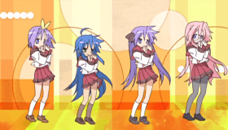
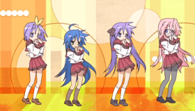
☆☆☆☆Contenido☆☆☆☆
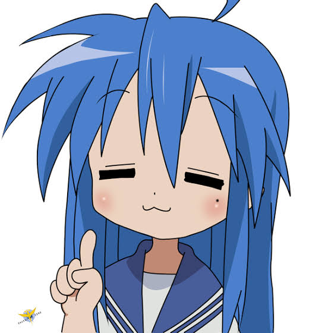
Konata Izumi (泉 こなた Izumi Konata?) tiene cabello azul y extremadamente largo, tanto que le llega hasta las rodillas sus ojos son verdes; además se aburre fácilmente cuando algo no le interesa. Le encanta fastidiar a Kagami, Puede ser inteligente, pero odia estudiar aunque es una experta en hacerlo "la noche anterior al examen". En contraste, están sus hábitos, ama los videojuegos a tal magnitud que compite contra Kagami en videojuegos de inteligencia Juega sobre todo a juegos de rol en red.Otra de sus aficiones es el manga/anime, por influencia que su padre, quien también lo hizo en los videojuegos. Éste, además, compra los juegos bishōjo que ambos disfrutan. Es muy hábil en deportes. Es ambidiestra.
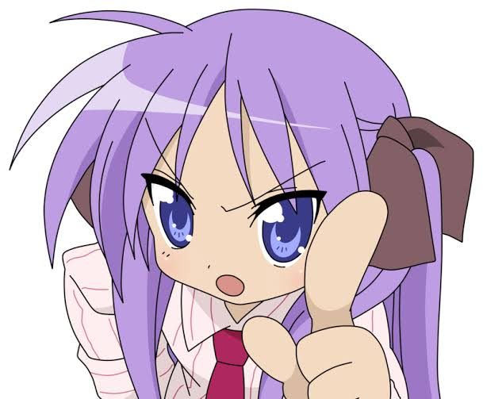
Kagami Hiiragi (柊 かがみ Hiiragi Kagami?) es la hermana melliza de Tsukasa. Es zurda. Tiene cabello lila, atado con dos moños, sus ojos son violetas. Es una buena estudiante e incluso fue presidenta de la clase en su primer año. Está en una clase distinta que Konata y Tsukasa, pero frecuentemente va a su clase durante el tiempo del almuerzo para comer con ellas. Normalmente se enfada con Konata porque ella siempre la fastidia, pero se quieren mucho en el fondo. Konata, como a todas sus amigas, la describe como el prototipo perfecto de "Tsundere" por sus cambios drásticos de humor, a diferencia de Tsukasa, no es buena en las tareas del hogar y es mucho más realista que su hermana. Kagami es un personaje fuerte e inteligente, sin embargo, con Konata suele ser tímida. Como a Konata, a Kagami le gustan los videojuegos, pero de un género diferente a los que juega Konata. Le encanta leer novelas ligeras.
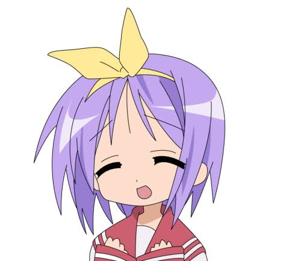
Tsukasa Hiiragi (柊 つかさ Hiiragi Tsukasa) es la hermana melliza de Kagami siendo la más joven de las dos. Es zurda. Tiene cabello corto de color lila y con un moñito amarillo atado sobre la cabeza, sus ojos son violeta; pero no tiene la misma forma que los de Kagami. Está en la misma clase que Konata y Miyuki. No es buena en los estudios o en los deportes, pero sí lo es cocinando. Es persona torpe con una disposición amistosa, es del tipo de chica adorable ya que destaca por su expresión inocente y tierna.
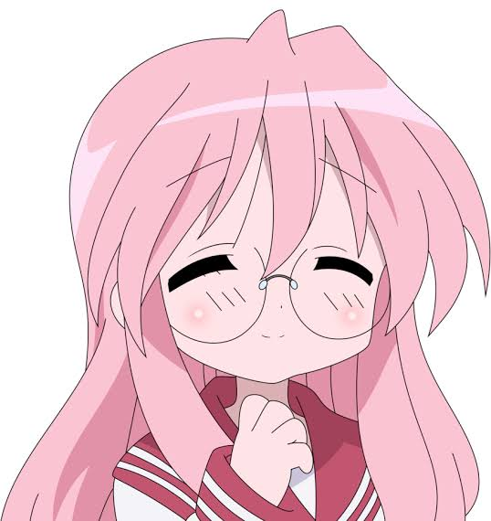
Miyuki Takara (高良 みゆき Takara Miyuki?) es una joven de familia adinerada. Quizás la chica con mejores notas de la clase y una clara muestra de un personaje. Su cabello es rosa claro y largo llegando a sobrepasar el coxis, sus ojos son de un color un poco más oscuro que los de Kagami y Tsukasa. Le gusta leer, dormir para no tener sueño en clases. Odia ir al dentista, pero frecuentemente tiene que ir a arreglar una corona suelta o debido a una caries. Cuando coge un videojuego, que no es común, cambia totalmente de personalidad.
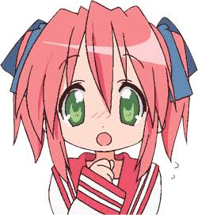
Yutaka Kobayakawa (小早川 ゆたか Kobayakawa Yutaka?), tiene 13 años y es la prima de Konata, es más baja que ella lo cual asusta a Kagami. Su cabello es corto de color rojo pálido atado como el de Kagami, sus ojos son de color verde claro. Es buena amiga de Minami lo cual hace que Hiyori imagine escenas yuri entre ellas. Es "Moe" como Miyuki. Se disculpa por todo creyendo que es una molestia y admira mucho a Konata. Es frecuente a enfermarse.
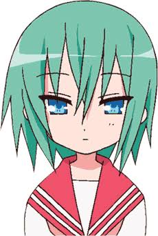
Minami Iwasaki (岩崎 みなみ Iwasaki Minami?) es vecina de Miyuki, a quien admira y es amiga de Yutaka. Tiene un perro y un parasol. Es callada. Su cabello es de color verde claro y sus ojos son celestes un poco más oscuros que los de Ayano . Se acompleja de sus pequeños pechos, en especial si está al lado de Miyuki, y por eso Konata la molesta mucho.
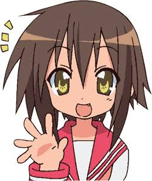
Misao Kusakabe (日下部 みさお Kusakabe Misao?) es compañera de clase de Kagami, han estado juntas desde hace 5 años consecutivos.Su cabello es corto de color marrón y sus ojos son de color amarillo tirando a marrón. Su caracter es parecido al de Konata solo que más activa, pero a ella le gusta jugar videojuegos solo por diversión. Tiene celos de Konata porque ella se ha vuelto más amiga de Kagami porque Misao conoce a Kagami desde hace 5 años mientras que Konata desde hace solo 2, pero en el anime se lleva bien con ella.
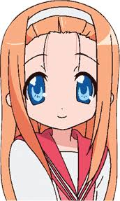
Ayano Minegishi (峰岸 あやの Minegishi Ayano?) es una mujer hermosa también es otra compañera de clase de Kagami y mejor amiga de Misao. Su cabello es de color naranja pálido, con una vincha y sus ojos son celestes. Su caracter es como el de Tsukasa, pero es amable y sabe cocinar bien, razón por la cual suele haber una conexión entre las dos ya que Ayano siente una gran preocupación por Hiiragi y por Misao.
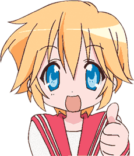
Patricia Martin (パトリシア＝マーティン Patorishia Mātin?) es una estudiante de intercambio y al igual que Konata es otaku. Trabaja en la misma cafetería Cosplay que Konata, Su cabello corto es de un naranja amarillento, aunque en algunas ocasiones se le ve el cabello solamente amarillo, sus ojos son de un celeste un poco más claro que los de Ayano. Es muy entusiasta y de acento extranjero.
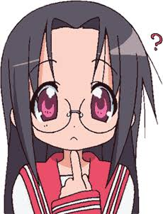
Hiyori Tamura (ひより田村, Hiyori Tamura). Una loca dibujante de doujinshis estilo yuri, que usa a sus amigas Minami Iwasaki y Yutaka Kobayakawa como personajes recurrentes. Seiyuu: Shimizu Kaori.
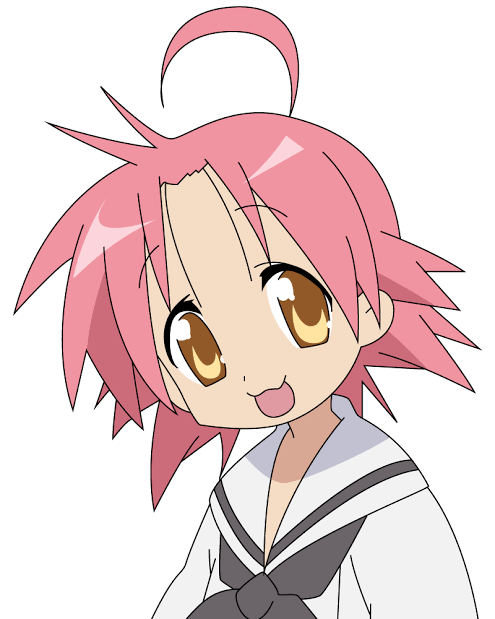
Akira Kogami (小神 あきら Kogami Akira?), de 14 años, es la principal presentadora en el segmento de Lucky Channel. Conocida como una idol en Japón, Akira tiene un cabello rosado salmón y ojos de color naranja pálido, y suele llevar un uniforme con mangas exageradamente largas. Es muy entusiasta y siempre saluda con un Oha-Lucky~!, agitando los brazos. Aunque se esfuerce por mostrar una personalidad kawaii, en su interior es extremadamente cínica, ácida y egoísta, y siempre que alguien accidentalmente la contradice o dice algo que no le gusta, reacciona violentamente, vociferando que realmente está harta de hacer de idol e insultando al aludido.
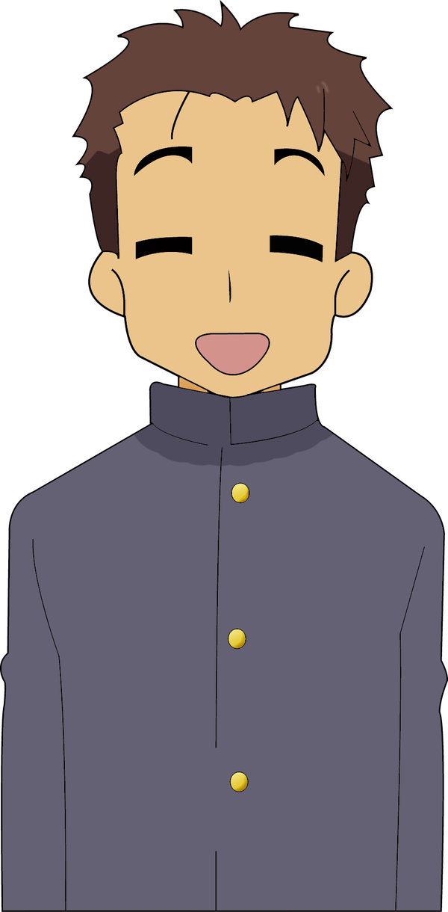
Minoru Shiraishi (白石 みのる Shiraishi Minoru?) es el asistente de Akira, basado en el seiyū homónimo que pone la voz al personaje. Shiraishi es un presentador inicialmente muy entusiasta, aunque frecuentemente termina siendo insultado, humillado y vejado por Kogami cuando ésta cree que le está robando la atención.
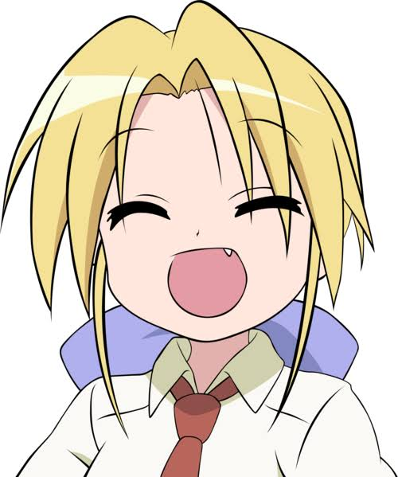
Nanako Kuroi (黒井 ななこ Kuroi Nanako?) es la profesora de Konata y es una solterona que se la pasa jugando a MMORPG's. Representa la vida que llevará Konata en unos años, pues cuando Nanako tenía la edad de Konata, se portaba como ella. A veces se siente identificada con la prima de Konata, Yui Narumi, pues piensa que es solterona como ella sin saber que está casada y su esposo siempre está fuera o lejos de casa. Su cabello es rubio y de largo parecido al de Konata, atado con un moño. Tiene ojos color verde amarillento.
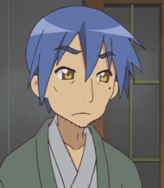
Sōjirō Izumi (泉 そうじろう Izumi Sōjirō?) es el padre de Konata y esposo de Kanata. Él fue quien influyó en los gustos de Konata.
Kanata Izumi (泉 かなた Izumi Kanata?) es la fallecida madre de Konata, aparece en el Capítulo 22 "Kanata entre nosotros" como un fantasma. Kanata ve que Konata ha crecido bien, pero le preocupan las influencias que Sojiro ha puesto en Konata. Intenta tomarse una foto con su familia, pero Konata y Sojiro vieron una mancha en la foto. También aparece en el preview del Capítulo 23 junto a su esposo. Sojiro comenta que quiere tener una relación corporea con ella y Kanata asegura que se tiene que ir. Pero después Kanata termina pidiendo ayuda a Sojiro pues había interferencia para volar.
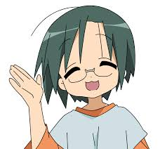
Yui Narumi (成実 ゆい Narumi Yui?) es la prima policía de Konata y hermana de Yutaka. Está casada pero su esposo nunca está en casa, lo único que se sabe de él es su apodo, en palabras de Konata, Ki-niisan. Se emborracha fácilmente y Konata le tiene miedo porque cuando está al volante conduce de forma temeraria. Nunca se toma nada en serio.
01 «La chica veloz pero un poco lenta.» «Tsuppashiru Onna» (つっぱしる女) 8 de abril de 2007
02 «Esfuerzo y resultados» «Doryoku to Kekka» (努力と結果) 15 de abril de 2007
03 «Muchas personas» «Iroiro na Hitotachi» (いろいろな人たち) 22 de abril de 2007
04 «Cuestión de motivación» «Yaruki no Mondai» (やる気の問題) 29 de abril de 2007
05 «Famosa tiradora» «Meishashu» (名射手) 6 de mayo de 2007
06 «Clásico de verano» «Natsu no Teiban» (夏の定番) 14 de mayo de 2007
07 «Imagen» «Imēji» (イメージ) 21 de mayo de 2007
08 «Yo tampoco soy tan fuerte» «Watashi ja Nakute mo Ousei» (私じゃなくても旺盛) 28 de mayo de 2007
09 «Esa sensación» «Sonna Kankaku» (そんな感覚) 4 de junio de 2007
10 «Deseo y pasión o cultura general» «Ganbou» (願望) 11 de junio de 2007
11 «Cómo gastar dinero en Nochebuena» «Iron na Seiya no Sugoshigatita» (いろんな聖夜の過ごし方) 17 de junio de 2007
12 «Vamos al festival» «O-matsuri e Ikō» (お祭りへ行こう) 24 de junio de 2007
13 «Un día delicioso» «Oishii Hi» (おいしい日) 1 de julio de 2007
14 «Bajo la sombra del mismo árbol» «Hitotsu Yane no Shita» (ひとつ屋根の下) 8 de julio de 2007
15 «No se puede cambiar de repente» «Ikinari wa Kawarenai» (いきなりは変われない) 15 de julio de 2007
16 «Tono» «Ringu» (調子) 22 de julio de 2007
17 «En la Base del Sol» «O-tento-sama no Moto» (お天道様のもと) 29 de julio de 2007
18 «Varios colores» «Jūnintoiro» (十人十色) 05de agosto de 2007
19 «La naturaleza está en 2-D» «Niji ni Honshitsu Ari» (二次に本質あり) 12 de agosto de 2007
20 «Maneras de pasar el verano» «Natsu no Sugoshigata» (夏の過ごし方) 19 de agosto de 2007
21 «La caja de Pandora» «Pandora no Haker» (パンドラの箱) 26 de agosto de 2007
22 «Con Kanata entre nosotros» «Koko ni Aru Kanata» (ここにある彼方) 2 de septiembre de 2007
23 «Una delgada línea» «Bimyou na Rain» (微妙なライン) 9 de septiembre de 2007
24 «Por anunciar» «Mitei» (未定) 16 de septiembre de 2007
OVA: El 26 de septiembre del 2008 se estrenó una OVA de Lucky ☆ Star.14 Esta OVA se centra en siete historias, en las cuales podemos ver a las protagonistas de la serie, involucradas en nuevas locuras y problemas. Lo particular de estas historias es que cada una es contada o vista desde el punto de vista de una de las protagonistas
Aimu san senchi Sorya punitte koto kai? Cho! Rappinguga Seifuku... Da furitte koto nai Pu Ganbaccha Yachaccha Sonto kyacchi & Release Gyo Aisei... Aisei... no Taniaini Darlin' Darlin' FREEZE!
Nankaderu Nankateru Aishiteru Are Ikkoga machitterunru Nayaminbo Kotetsubo Oishinbo Ikagenni shinasai
Tondetta aitsu no hoderu karadatte Iwayuru futsu onnya no ko Odoroita atashidake? Tonkotsu Harigane Okawari dadada
BON-BON oendan Let's get! Cheri pai [Cherry pie] RAN-RAN kangekai Look up! senseshion [Sensation] Hai! Sonzaikan ten ten shouwakusei Butsukatte tokemashita bozen Ooini Utatte shirenjya
Motteike! Saigoni waracchaunowa atashino hazu Seera [Sailor] fuku dakara desu <- Ketsuron Getsuyoubinanoni! Kigenwaruino dousuruyo? Natsufukuga iino desu <- Kya? wa! ii [Kawaii]
Sekkin san pikuto Suru madettechucho da Yan Ganbatte Harikitte My Darilin' Darlin' Please
Moriagari Morisagari Koishitari Mada naichoni shitoite rinri Amaenbo Youjinbou Tsushinpo Choshikoite gyokusai
Fundetta aitsuni koyubi itaitte Oogesachirari kuronihai Zettaijyan ryouikijyan? Namaashi shirupika onedari dadada
MON-MON Mosouden Let's Go! Parushinden YAI-YAI Soranbushi What's up? Denputeshon Oi! Soujitsukan Yen Yen Arubaito Sagashitara mitsukatte tozen Jinsei marutto Kenenashi
Yattemina! Shinkini nenacchaunowa atashino chousen Seera fuku kigaedemo = atashi Shunmiwa douyo? Chiri misenante arikitari Serifukuwa kantanyo = rakuchin
Fuusoku 3 metoru Dakitsuite gamanda Gya Mune dokkin Hoshizukkin I'm Sugar Sugar Sweet
BON-BON MON-MON Day Let's Get! Uh Uh Ah! RAN-RAN chop chop kick Look up! Fu Fu Ho! Hi! Education!! Love is ABC Undakada undakada unyaunya Harete harete hirenra
Moteike! Saigoni waracchaunowa atashino hazu Seera [Sailor] fuku dakara desu <- Ketsuron Getsuyoubinanoni! Kigenwaruino dousuruyo? Natsufukuga iino desu <- Kya? wa! ii [Kawaii]
Yapparine Saigoni waracchaunowa atashino hazu Seera [Sailor] fuku dakara desu <- Ketsuron
Aimu san senchi Sorya punitte koto kai? Wao! Rappinguwa seifuku... Yoo shinete koto kai? Po Ganbaccha Yachaccha Antokyappu & Jyanjite Ha Aisei Aiseide sugetara Darlin' Darlin' AMUSE
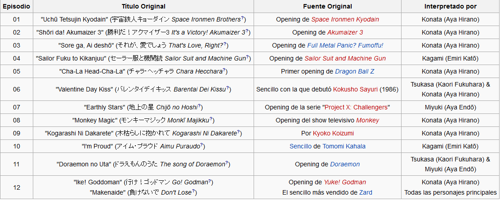 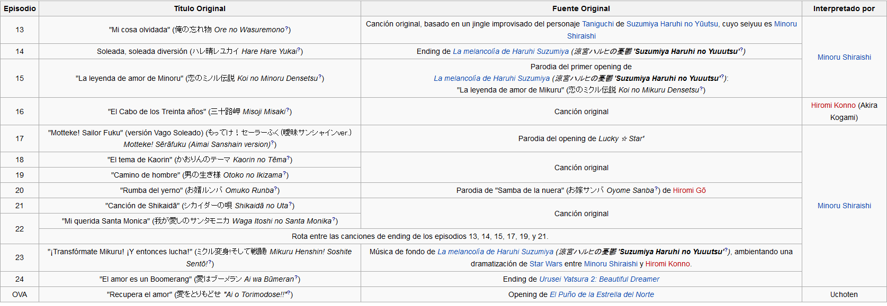